THE ISLAND
You look around and realise you're on a boat
It slowly rocks back and forth in the ocean
It is tied to a small jetty and beyond lies
This was my favorite project as:
- I am an enthusiast of games in all forms, including board, video and sports. To create one was amazing.
- The project gave me the freedom to craft an entirely new world for others to discover.
- It involved designing puzzles for players and solving problems during development.
- It was something I could not only show my friends, but watch them play and enjoy it.
- Utilizing Python to program the game mechanics was both challenging and rewarding.
The task was to write a simple, single player, vintage text-based adventure game in Python3 using an Object Orientated Programming design. With ample free time and a genuine enthusiasm for this project, I perhaps expanded the scope a bit beyond the basic requirements.
Final Requirements were:
- Explorable locations x 5
- Interactive Non Player Characters x 1
- Interactive items x 5
- Actions to move and interact
- A bag
- A simple map
- A way to win and lose
The game ultimately featured:
- Explorable locations x 11
- Interactive Non Player Characters x 3
- Dozens of interactive items
- More than a dozen action words
- A limited bag to carry items
- A detailed map tracking locations
- Multiple ways to win and lose
- An extensive help menu
- Puzzles that change each game
- Character specializations
- An energy and hydration system
To download and play CLICK HERE
!!! WARNING !!!
The following may contain spoilers
Coding
This experience gave me valuable insight into what it takes to create a game from scratch, from designing classes and functions to building and populating the world.
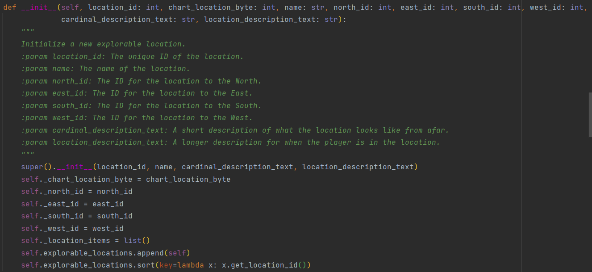 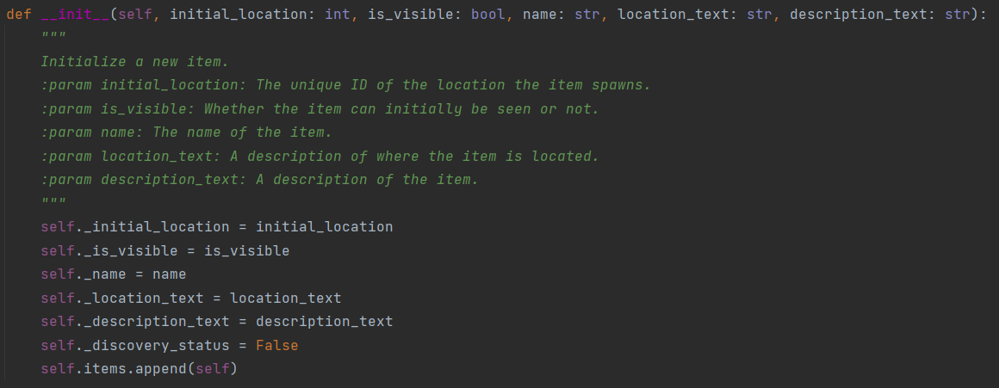Ultimately displaying them on the screen.
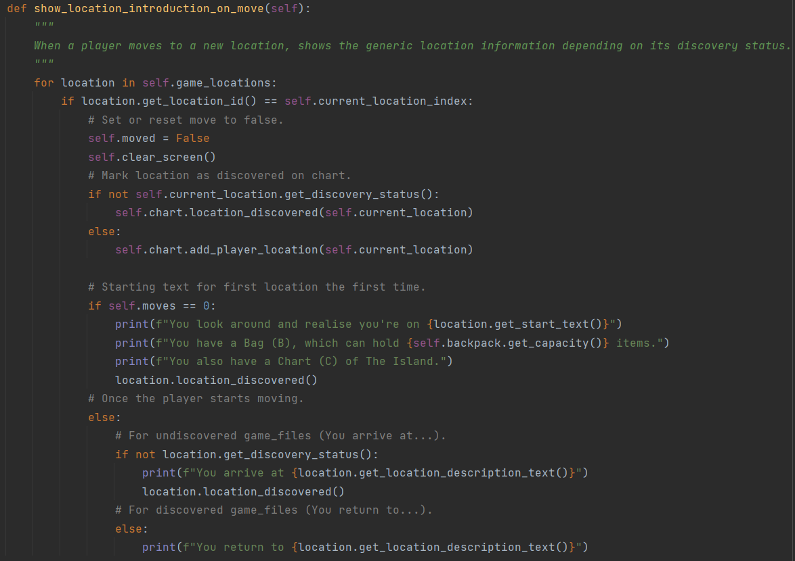 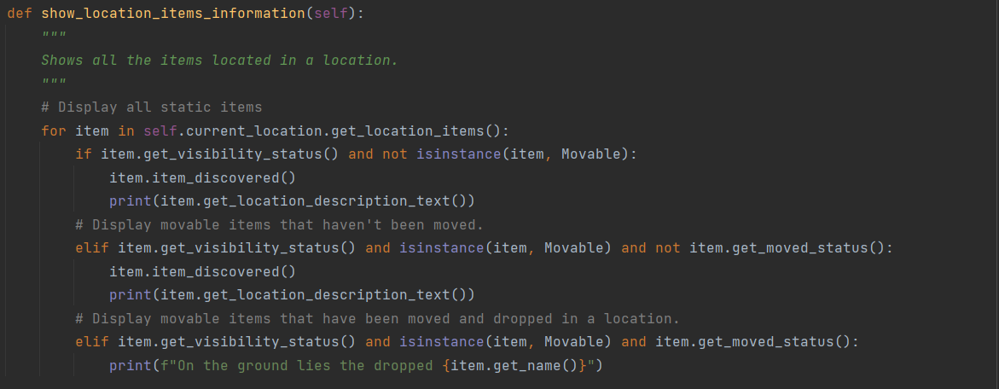It revealed the amount of effort and conditional statements required just to open something, let alone the 2,000+ lines of code dedicated solely to other conditionals.
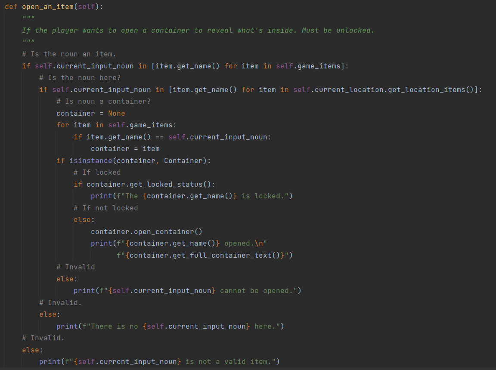Explorable Locations
I initially designed the game world using a 3x3 grid, representing locations on an island. To meet the initial requirement of having 10 explorable locations, which was later reduced to five, I introduced a boat in the lower-left corner. Surrounding these locations was an ocean, which entering into would result in a game over. Seeking to provide a secondary avenue to completing the game, I expanded the map by adding a new location to the north. Each location was crafted with its own distinct description, items, and ambiance, all serving specific roles within the game's narrative.
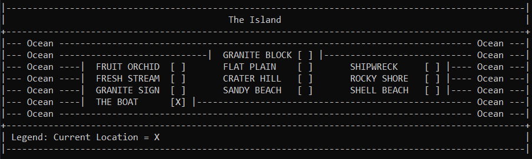Non Player Characters
The three required NPCs, the requirment later reduced to one, are scattered across the map and can assist the player in their escape from The Island. I didn't want to make it too easy though, so items may have to be discovered first or items traded to gain assistance. I also added a character specializations to make these interactions easier. 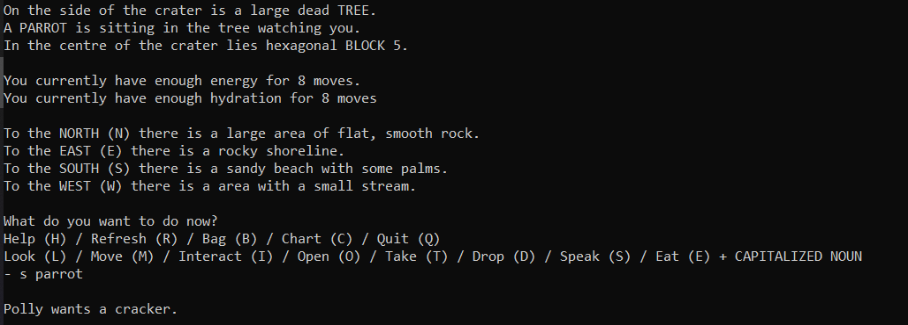Usable Items
I needed a way to denote items that action words could be used with. I decided they would be written in caps lock for easy identification, although not all items can use all action words.
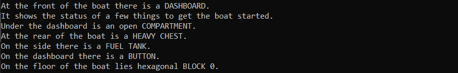Various Action Words
The player can perform the following actions.
These can be used on their own:
- Help (H)
Opens in game help dialogue - Refresh (R)
Clears up the screen - Bag (B)
Displays capacity and carried items - Chart (C)
Displays the map - Quit (Q)
Leave the game
These require an item:
- Look (L)
Discover more information about the item - Move (M)
Go to an adjacent location with N, S, E or W - Interact (I)
Use an item from the location or your bag - Open (O)
For closed, unlocked containers - Take (T)
Place an item in your bag to take with you - Drop (D)
Drop an item from your bag - Speak (S)
Interact with an NPC - Eat (E)
Eat or drink a valid item
Bag
Items need to be move and used, so can be taken and stored in a bag. I chose to give the player a capacity of five items. They can also be dropped if no longer required and will remain in the dropped location. I also added a character specializations which allows the player to carry 10 items.
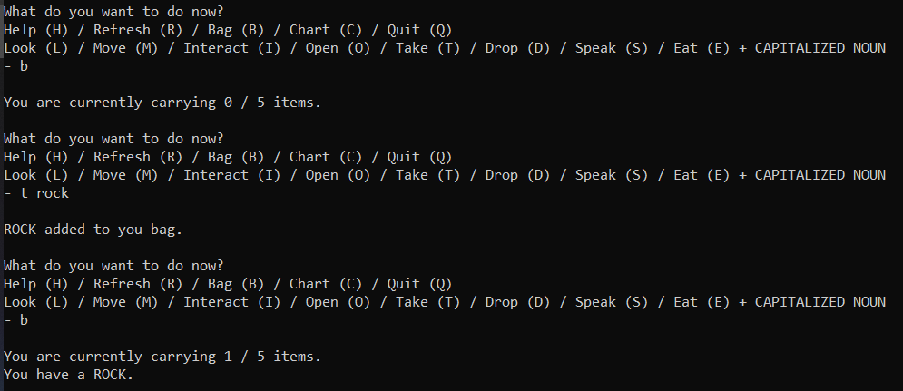Chart
As The Island is explored, the players current position will be indicated by an 'X' on the map, and the names of various locations will become known to they uncover new location.
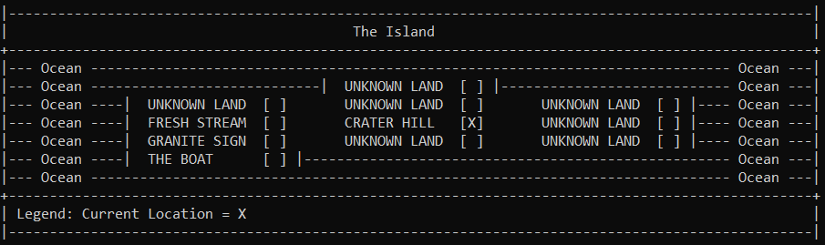Winning and Losing
I contemplated various ways for players to complete the game. The most straightforward method would be to escaping by boat. To utilize the boat, players would need to fulfill certain prerequisites: gathering fuel, power, and a key. To enhance gameplay depth, I decided there would be two alternative methods to acquire each of these essentials. This design ensured that if one item was missed or made inaccessible due to player choices, another path to obtain it would still be available, maintaining the game's playability.
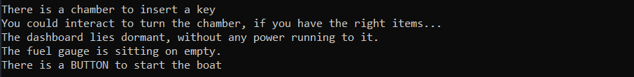For the secondary avenue to completing the game, I incorporated a puzzle that an observant player may be able to solve using the granite block in the northern most part of The Island. This rewards those who explore and observe meticulously.
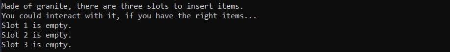There are also various ways to lose, from wandering into the ocean to solving problems incorrectly, and not eating or drinking to being poisened by consuming the wrong thing.

Help Menu
I created a comprehensive help menu for the game to assist players. It provides a basic overview of the gameplay essentials, the objective on how to win the game and detailed explanations of how each action word functions within the game.
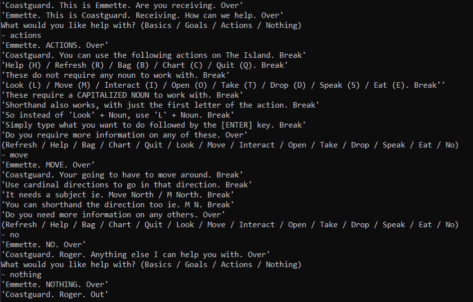Puzzles
I develop some puzzles that would vary with each playthrough. I created two, the first involves a note where one of ten different cryptic puzzles would appear, and the second where a colour is randomly selected from six options, influencing the values of food items.
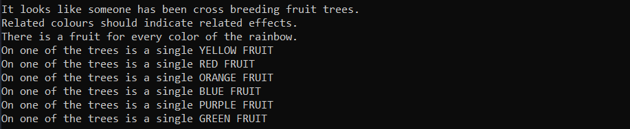Specialization
To enhance the gameplay experience, I provided players with the choice of four perks to assist them during their adventure on The Island. They could choose to carry more items, reduce the cost of movement, assist when interacting with charecters, or see values on consumable items.
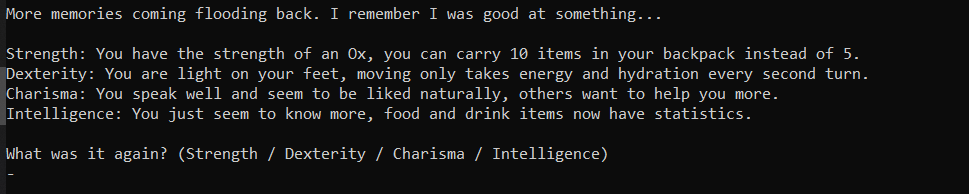Consumables System
To enhance the gameplay experience even more, I introduced energy and hydration mechanics. This compels players to manage their resources more carefully as they explore The Island, preventing endless wandering. I also added character specializations which allow the player to extended their travel capabilities and another to enhance their knowledge about consumable items.
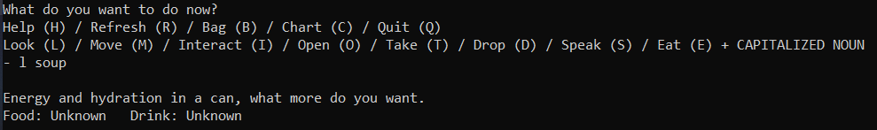